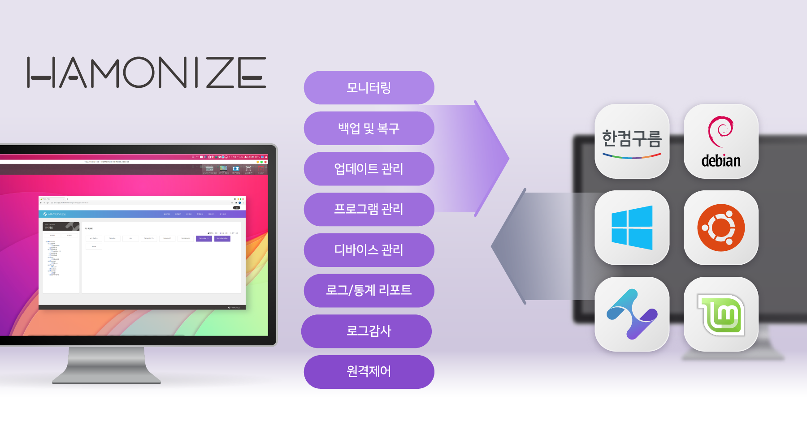

하모나이즈는 개방형 OS 및 윈도우 OS를 사용하는 원격지의 PC들을 통합관리 할 수 있는 솔루션입니다.
하모나이즈 프로젝트는 크게 하모나이즈 센터, 하모나이즈 에이전트, 하모나이즈 어드민으로 이루어져 있습니다.

Hamonize Center
하모나이즈 센터에서는 관리자가 원격지의 대상 PC들에게 백업및 복구, 프로그램 설치, 차단 등의 정책을 내리고 정책이 정상적으로 내려졌는지 수행결과를 볼 수 있습니다
또한, 원격지 PC들의 실시간 cpu, memory 등의 사용량을 한눈에 확인하고 자원을 관리할 수 있습니다.
그리고 원격지의 PC에 원격 접속을 하여 문제가 생겼을 경우 바로 대응을 할 수 있습니다.
Hamonize Agent
하모나이즈 에이전트는 별도의 화면 없이 하모나이즈 센터에서 내린 정책을 수행하고 수행결과를 보내는 역할을 합니다
Hamonize Admin
하모나이즈 어드민에서는 하모나이즈 센터에서 원격접속을 할 수 있도록 기능을 제공하고 별도로 하모나이즈 어드민 데스크탑 어플리케이션을 통해서도 연결된 원격지의 PC들의 원격제어, 세션관리,전원
관리 등의 기능을
할 수 있습니다.
Features
호환성
HamoniKR OS뿐만 아니라 Linux mint, Ubuntu, Debian, Hancom Gooroom OS, Window OS 등 다양한 OS를 지원하고있습니다.
개방성
하모나이즈 프로젝트는 모두가 사용할 수 있고 더 좋은 프로그램으로 함께 성장하고자 하는 오픈 소스 프로젝트입니다. 누구나 불편함을 얘기할 수 있고 보완할 수 있습니다.
편리성
하모나이즈 서비스 구동을 위한 필요 서버들을 도커로 구성하여 제공하고 있습니다
보안성
HMACSHA256 키 지정 hash 알고리즘으로 데이터를 암호화해 제공하여 안전한 보안성을 제공하고있습니다